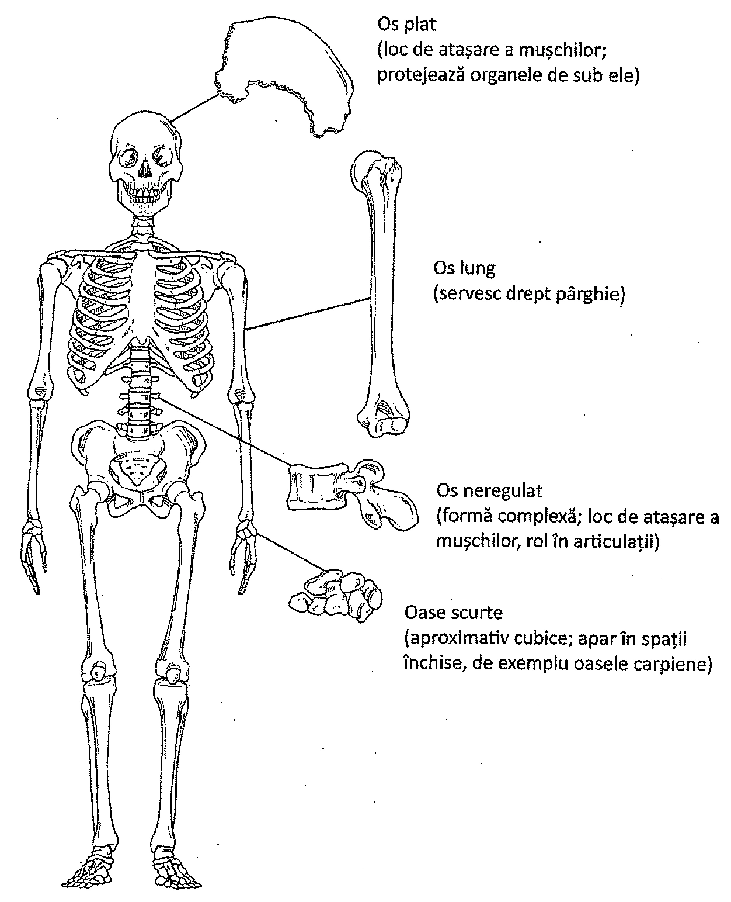
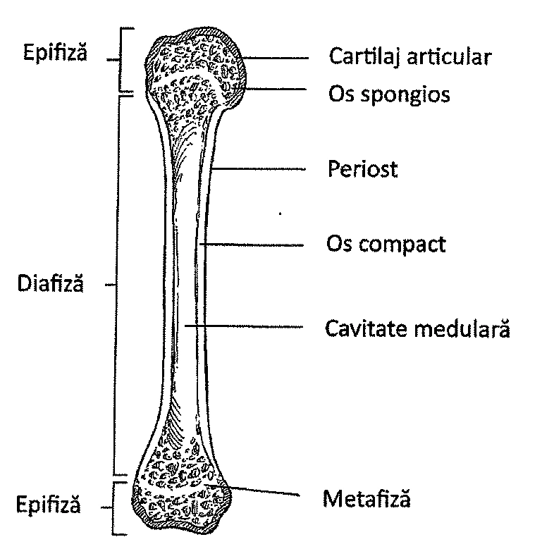
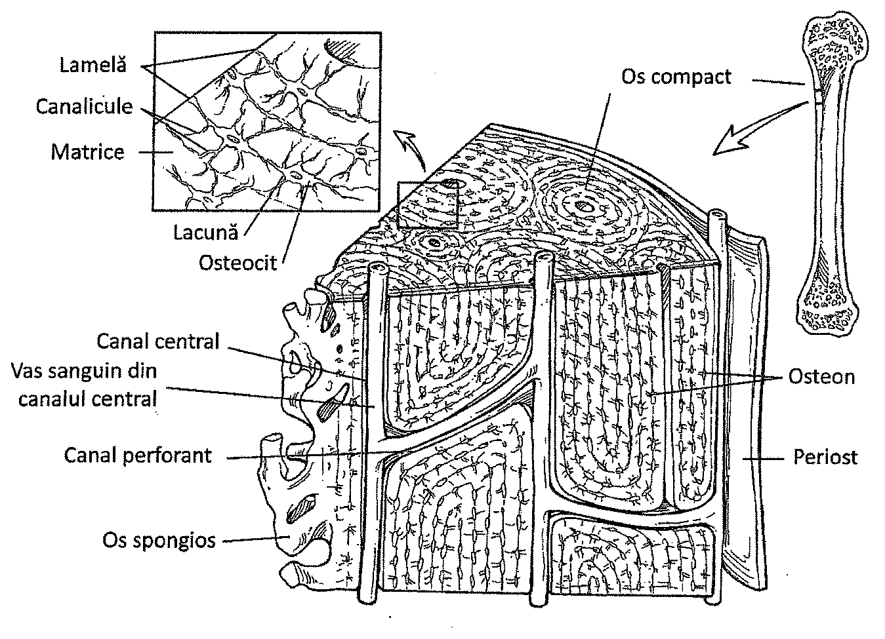
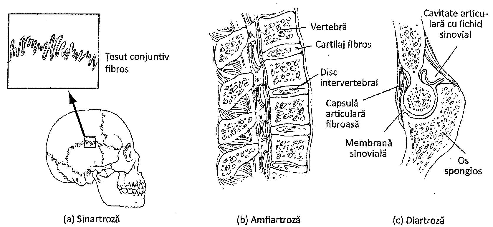
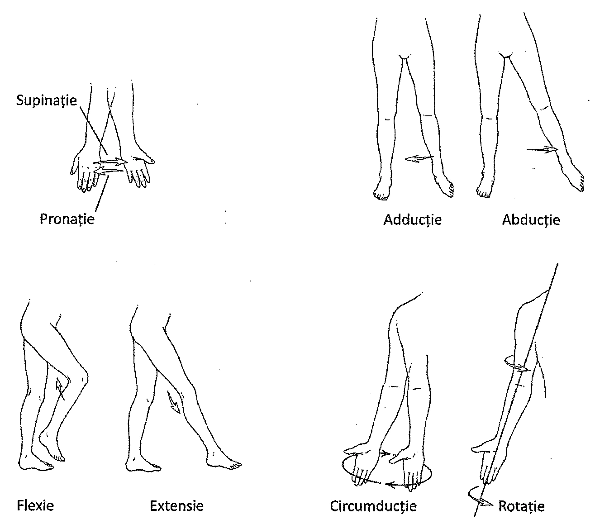

6.1. Introducere
Corpul uman conține 206 oase, ce alcătuiesc scheletul (Capitolul 7). Oasele asigură suport organismului, protejează organele, depozitează calciu și fosfați, și reprezintă locul în care se formează celulele sanguine (Tabelul 6.1). Articulațiile reprezintă locul în care oasele se întâlnesc, sau se articulează.
| Funcție | Descriere |
|---|---|
| Mișcare | Mențin sau schimbă poziția organismului împreună cu mușchii scheletici |
| Protecție | Protejează encefalul, plămânii și alte organe |
| Suport | Asigură suport organismului și ancorează mușchii |
| Stocare de minerale | Servesc drept depozit de minerale; ajută indirect la menținerea echilibrului hidric al organismului și a activităților metabolice |
| Hematopoieză | Este locul în care se produc diferitele tipuri de celule sanguine |
6.2. Osul
Osul este cel mai dur țesut conjunctiv din organismul uman. Este alcătuit din celule, fibre de colagen și o substanță fundamentală densă, mineralizată. În os se regăsesc mai multe tipuri de celule, iar mineralele contribuie la duritatea sa.
Clasificarea oaselor
Oasele sunt clasificate după formă și localizarea în organism. După formă, oasele se clasifică în oase plate, oase lungi, oase scurte și oase neregulate.
Oasele plate constau din două plăci subțiri de os compact, între care se află o regiune centrală compusă din os spongios. Oasele plate protejează țesuturile delicate ale encefalului și ale organelor toracice. De asemenea, ele oferă suprafețe întinse pe care se pot atașa tendoanele. Oasele plate includ oasele craniului, omoplații (scapulele), coastele, sternul și oasele pelvisului.
Oasele lungi prezintă un ax denumit diafiză și două capete numite epifize. Aceste oase se întâlnesc în componența membrelor superioare, inferioare și a degetelor.
Oasele scurte au formă aproximativ cuboidală și suportă greutăți. Ele includ oasele încheieturii mâinii (oase carpiene) și ale gleznei (oasele tarsului).
Oasele neregulate au forme variate. De exemplu, oasele coloanei vertebrale (vertebrele) au o formă rectangulară, dar au și prelungiri cu aspect de contraforturi sau aripi. Aceste prelungiri servesc drept puncte de ancorare pentru tendoane și ligamente, întărind legătura dintre oasele adiacente. Alte exemple de oase neregulate sunt oasele wormiene, care se află la nivelul anumitor suturi craniene, și oasele sesamoide, aflate la nivelul articulațiilor, dintre care cele mai importante sunt patelele sau rotulele (Figura 6.1).

În funcție de localizare, oasele pot fi împărțite în două grupe: oasele scheletului axial și oasele scheletului membrelor (periferic). Scheletul axial include toate oasele ce formează axul central al organismului, precum oasele capului, coloana vertebrală și cușca toracică.
Scheletul membrelor include oasele membrelor superioare și inferioare, precum și oasele ce leagă membrele de scheletul axial. Scheletul membrelor cuprinde și oasele mâinilor și picioarelor, precum și oasele centurilor corespunzătoare (pectorală și pelviană).
Țesutul osos
Pentru a-și putea îndeplini funcțiile, oasele trebuie să fie dure, rigide, dar și suficient de flexibile pentru a se putea îndoi într-o oarecare măsură. Duritatea și flexibilitatea oaselor se datorează unor compuși chimici sintetizați de celule formatoare de os, numite osteoblaste. Componenta principală a osului este reprezentată de o sare minerală numită fosfat de calciu, combinată cu mici cantități de hidroxid de calciu și carbonat de calciu. Fosfatul de calciu este principalul component al hidroxiapatitei. Osul conține cristale de hidroxiapatită înglobate într-o matrice alcătuită din fibre de colagen. Hidroxiapatita conferă duritate osului, iar fibrele de colagen sunt răspunzătoare de flexibilitatea acestuia.
În oase are loc și formarea celulelor sanguine, denumită hematopoieză. Aceasta are loc în măduva osoasă roșie din oasele spongioase, măduvă localizată în centrul multor oase precum vertebrele sau sternul, și la capetele humerusului și femurului (Capitolul 14). În măduva osoasă roșie se formează hematiile, leucocitele și plachetele sanguine.
Osul depozitează calciu și fosfați. Ambele substanțe sunt depozitate în os când se găsesc în cantități suficiente în organism, iar condițiile permit acest lucru. Ele sunt eliberate din os când sunt necesare în alte părți ale organismului.
Structura oaselor lungi
Exemplele tipice de os lung sunt femurul și humerusul. Porțiunea dreaptă, lungă a osului se numește diafiză, iar capetele se numesc epifize (Figura 6.2). Când osul este în creștere, la nivelul joncțiunii dintre diafiză și epifiză (numită metafiză) apare o zonă activă de cartilaj, placa epifizară. Osul crește în lungime pe seama depunerii de cartilaj la nivelul acestei plăci, fenomen care produce îndepărtarea capetelor osului. Ulterior, acest cartilaj este înlocuit cu țesut osos.
La extremitatea fiecărei epifize se află un strat subțire de cartilaj hialin, numit cartilaj articular. Acesta furnizează o suprafață ce facilitează deplasarea fără frecare a oaselor adiacente. Acolo unde nu prezintă cartilaj articular, osul lung este acoperit cu un țesut conjunctiv numit periost. Acesta acoperă, spre exemplu, diafiza.

Osul compact formează porțiunea externă a epifizelor. În interior, epifiza conține os spongios. Acesta este alcătuit dintr-o rețea de structuri osoase întretăiate numite trabecule (travee). Printre travee se găsesc spații ce conțin măduvă roșie. După cum îi spune și numele, osul spongios este mai puțin dens decât cel compact.
Deși diafiza oaselor lungi este goală pe dinăuntru, ea este acoperită la exterior de os compact, dens și dur. Interiorul diafizei conține o cavitate medulară în care se găsește măduvă galbenă.
Cavitatea centrală a osului se numește cavitate medulară. Ea este căptușită de o membrană subțire numită endost, în care se află celule formatoare de os (osteoblaste) și celule ce remodelează osul (osteoclaste). Funcția celor două celule va fi discutată în cele ce urmează.
Structura histologică a osului
La microscopul optic, osul compact prezintă o serie de inele concentrice, intricate, de țesut osos. Aceste inele sunt organizate în sisteme denumite osteoane (Figura 6.3). Fiecare osteon are un canal central care conține nervi și capilare sanguine.
Inelele concentrice ale unui osteon sunt străbătute de un sistem de canale, numite canale perforante. Ele conectează între ele canalele centrale și celulele osoase. În jurul fiecărui canal central se găsesc lamele osoase, adică inelele osteonului. Ele conțin spații, numite lacune, în care se află osteocite.

Osteocitele sunt captive în țesutul osos pe care îl întrețin. Lacunele în care ele se situează sunt unite între ele, precum și cu canalul central prin extensii de dimensiuni electronomicroscopice numite canalicule.
Spațiile dintre osteoane conțin lamele interstițiale, care sunt, de fapt, osteoane incomplete.
Osul este învelit de periost, din care iau naștere osteocitele. În forma lor inițială, osteocitele sunt osteoblaste foarte active, care produc colagenul și hidroxiapatita prezente în os. Pe măsură ce sunt înglobate în osul format, ele devin osteocite, hrănind osul din jur și îndepărtând produșii reziduali.
Formarea osului
Aproximativ în a șasea săptămână a dezvoltării embrionare apar tije rectilinii de cartilaj hialin ce au forma oaselor lungi. Oasele plate se dezvoltă sub formă de membrane ce conțin țesut conjunctiv fibros. În interiorul acestor membrane se găsesc insule de cartilaj hialin care vor iniția procesul de formare a osului.
Osteoblastele formează osul, osteocitele îl întrețin, iar osteoclastele îl resorb.
Formarea osului se numește osificare, și poate fi de două tipuri. Primul tip de osificare, osificarea intramembranoasă, are loc în oasele plate ale craniului. Ea începe în momentul în care osteoblastele migrează în membrane și formează centre de osificare, unde secretă matricea osoasă compusă din colagen, fosfat de calciu și carbonat de calciu. Centrele de osificare sunt astfel rapid înconjurate de os. Pe măsură ce zonele osificate se extind, ele se unesc și formează trabeculele osului spongios. În spațiile dintre trabecule se dezvoltă măduva osoasă roșie. În același timp, osteoblastele depun un strat de os compact la nivelul periostului.
Cel de-al doilea tip de osificare este cea a oaselor lungi, osificarea endocondrală. În cursul acesteia, apar vase sanguine în interiorul tijelor cartilaginoase și se dezvoltă osteoblaste în membrana ce înconjoară aceste tije. Osteoblastele depun os compact de jur împrejurul tijei. Osificarea continuă la suprafață, dar nu și în profunzime. Astfel, interiorul va rămâne sub forma unei cavități ce va conține măduva osoasă.
Pe măsură ce se formează cavitatea medulară, osul compact ce o înconjoară se îngroașă și se alungește, tija cartilaginoasă continuă să crească la capete, asigurând astfel, creșterea în lungime a osului. După pubertate, zona de cartilaj se îngustează, formând placa epifizară; când aceasta este complet osificată, creșterea osului în lungime încetează. Acest fenomen are loc după pubertate, și este controlat hormonal.
Osul compact mai este denumit și os lamelar. Este un os dens, ce prezintă osteoane la examinarea microscopică.
Remodelarea osoasă
Sfârșitul creșterii osoase nu este însoțit de încheierea activității din interiorul osului. Într-adevăr, remodelarea osoasă este un proces ce are loc de-a lungul întregii vieți, fiind controlată de interacțiunea dintre celulele osoase formatoare (osteoblaste) și cele resorbante (osteoclaste). Osteoclastele secretă substanțe ce dizolvă osul. Astfel, ele furnizează organismului calciu și fosfat, ce pot fi utilizate în contracția musculară sau în metabolismul celular.
Activitatea osteoblastelor și a osteoclastelor este de obicei menținută într-un echilibru ce poate fi afectat de hormoni, inclusiv de cei sexuali. La persoane în vârstă, resorbția osoasă poate fi mai pronunțată decât formarea, consecința fiind o afecțiune complexă numită osteoporoză. Odată cu pierderile de calciu, oasele devin mai puțin rezistente și se rup mai ușor.
Pentru prevenirea osteoporozei se recomandă, de obicei, creșterea aportului de calciu prin suplimente alimentare ce conțin calciu, și activitate fizică. Aceasta provoacă un stres mecanic ce stimulează formarea de os de către osteoblaste.
6.3. Articulațiile
Articulațiile sunt locurile în care se întâlnesc două sau mai multe oase. Există diferite tipuri de articulații în organismul uman, fiecare cu o structură și funcție specifică. Ramura anatomiei care studiază articulațiile se numește artrologie.
Articulațiile se clasifică în funcție de gradul de mișcare pe care îl permit. Există trei tipuri de articulații: sinartroze, amfiartroze și diartroze (Figura 6.4). Sinartrozele sunt articulații imobile, amfiartrozele sunt semimobile, iar diartrozele sunt pe deplin mobile.

Sinartrozele
Sinartrozele sunt articulații aproape sau total imobile. Ele sunt compuse din două capete osoase adiacente, separate de o cantitate redusă de țesut fibros. În unele cazuri, oasele pot fi separate de un strat subțire de cartilaj. Astfel de articulații pot fi întâlnite în structura craniului, unde sinartrozele se numesc suturi. Ele apar între osul frontal și cele 2 oase parietale, între oasele parietale precum și între oasele parietale și osul occipital. Suturile sunt imobile.
Un alt exemplu de sinartroză este gomfoza, ce apare la locul de implantare a dintelui în alveolă; ea trebuie să fie imobilă. O altă sinartroză este sindesmoza, în care diafizele a două oase lungi adiacente sunt unite printr-o membrană fibroasă interosoasă. O astfel de sindesmoză unește diafizele radiusului și ulnei de la nivelul antebrațului, permițând doar o mișcare minimă între cele 2 oase.
Amfiartrozele
Amfiartrozele sunt articulații cu o mobilitate limitată. O amfiartroză constă din 2 capete osoase adiacente, separate de o cantitate mare de cartilaj. În corpul uman, amfiartrozele se găsesc în 2 locuri importante: între vertebre, unde cartilajul are forma unui disc, și între cele 2 oase pubiene ale pelvisului.
Discurile intervertebrale, aflate între vertebre, sunt compuse dintr-un fibrocartilaj ce înconjoară un miez gelatinos. Aceste discuri absorb șocurile și egalizează presiunea dintre oasele adiacente în timpul mișcărilor. Datorită flexibilității lor discrete, discurile intervertebrale permit o mișcare limitată, precum cea de aplecare înspre înainte sau în lateral. Amfiartroza dintre oasele pubiene se numește simfiza pubiană și are o mobilitate foarte limitată. O altă amfiartroză poate fi articulația sacroiliacă, dintre osul sacru și osul iliac.
Diartrozele
Diartrozele sunt articulații ce permit mișcări libere. Ele sunt alcătuite din două capete osoase cuprinse într-o cavitate denumită cavitate sinovială, motiv pentru care aceste articulații se mai numesc și articulații sinoviale. Suprafețele articulare ale oaselor nu sunt conectate una de cealaltă iar, în anumite cazuri, mișcările permise de aceste articulații sunt foarte ample. Astfel de articulații apar la nivelul proceselor articulare ale vertebrelor, umărului, cotului, încheieturii mâinii, șoldului, genunchiului, gleznei și labei piciorului.
Într-o articulație sinovială, fiecare os este acoperit de un cartilaj articular. Cele două capete osoase sunt învelite de o capsulă fibroasă, în interiorul căreia se află cavitatea sinovială. Suprafața internă a capsulei este tapetată de o membrană sinovială, care nu acoperă, însă, suprafețele articulare ale oaselor. Această membrană secretă un lichid vâscos, cu rol lubrifiant, numit lichid sinovial.
În anumite cazuri, cavitatea articulară este divizată parțial sau complet de niște discuri cartilaginoase. De exemplu, fiecare genunchi dispune de două astfel de discuri cartilaginoase. Acestea au formă semilunară și se numesc meniscuri. În anumite articulații, capsula fibroasă articulară se organizează sub formă de fascicule groase, ce formează ligamentele. Articulațiile sunt stabilizate și de mușchii atașați oaselor. De exemplu, la nivelul umărului, capătul proximal al humerusului este menținut în articulație de către mușchii inserați pe el.
Sinartrozele sunt aproape imobile, amfiartrozele au o mobilitate limitată, iar diartrozele sunt cele mai mobile articulații.
Unele diartroze pot include niște saci închiși, plini cu lichid, numiți burse (singular bursă). Bursele sunt căptușite de membrane sinoviale, care le continuă pe cele ale cavităților sinoviale din vecinătate. Bursele sunt așezate de obicei între piele și proeminențele osoase subiacente. De exemplu, astfel de burse se găsesc la nivelul patelei. Bursele facilitează alunecarea tendoanelor pe suprafața oaselor.
Mișcările articulare
Mișcările de la nivelul diartrozelor au loc sub acțiunea mușchilor scheletici. În majoritatea cazurilor, un capăt al mușchiului este atașat de o parte imobilă, fixă a unei articulații, iar celălalt este atașat pe partea opusă, de partea ei mobilă. Contracția mușchiului exercită o tracțiune asupra părții mobile, apărând astfel mișcarea articulară.
În articulații pot avea loc diverse tipuri de mișcări. Flexia este definită ca fiind mișcarea ce reduce unghiul dintre două oase în articulație. În opoziție, extensia este mișcarea în urma căreia unghiul dintre două oase crește. Simplu spus, flexia se referă la îndoirea unei articulații, ca de exemplu flexia genunchiului, iar extensia are ca rezultat întinderea respectivei articulații (Figura 6.6).

Alte două mișcări articulare sunt abducția și adducția. Abducția reprezintă îndepărtarea unui membru față de linia mediană a corpului, iar adducția apropierea membrului respectiv de linia mediană. Ridicarea brațului până la orizontală este un exemplu de abducție, iar întoarcerea lui la poziția anatomică este o mișcare de adducție.
Mișcările rotative sunt un alt tip de mișcări articulare. Rotația reprezintă mișcarea unei părți a corpului în jurul unei axe. Întoarcerea capului dintr-o parte în alta (ca atunci când se exprimă o negație) este un exemplu de rotație. Rotația poate fi medială, dacă are loc spre linia mediană a corpului, sau laterală, dacă are loc în direcția opusă. O formă specială de rotație o reprezintă pronația. Aceasta reprezintă rotația antebrațului, astfel încât palma să privească spre posterior. Supinația reprezintă mișcarea opusă, rotația antebrațului până când palma ajunge în poziție anatomică, privind spre anterior (Tabelul 6.3).
Ridicarea sau coborârea unei părți a corpului poartă numele de elevație sau depresie. Elevația reprezintă ridicarea, spre exemplu a umerilor, iar depresia mișcarea opusă. Retracția reprezintă mișcarea spre înapoi a unei părți a corpului, spre exemplu bărbia, iar protracția este mișcarea opusă.
Eversia reprezintă întoarcerea labei piciorului cu talpa spre exterior, iar inversia este mișcarea opusă. Flexia dorsală este ridicarea labei piciorului către tibie, iar flexia plantară reprezintă îndoirea labei piciorului spre înapoi.
| Acțiune | Acțiune antagonistă |
|---|---|
| Flexie: micșorarea unghiului dintre două oase | Extensie: mărirea unghiului dintre două oase |
| Abducție: îndepărtarea unei părți a corpului de linia mediană | Adducție: apropierea unei părți a corpului de linia mediană |
| Rotație medială: rotația unui os de-a lungul propriei axe, către linia mediană a corpului | Rotație laterală: rotația unui os de-a lungul axei sale, dinspre linia mediană a corpului |
| Supinație: aducerea palmei în poziție anatomică | Pronație: aducerea palmei în poziția opusă celei anatomice (înspre posterior) |
| Elevație: ridicarea unei părți a corpului | Depresie: coborârea unei părți a corpului |
| Protracție: împingerea spre înainte a unei părți a corpului | Retracție: retragerea spre înapoi a unei părți a corpului |
| Flexie dorsală: îndoirea labei piciorului către tibie | Flexie plantară: îndoirea labei piciorului în direcția opusă |
| Inversie: rotirea tălpii spre interior | Eversie: rotirea tălpii spre exterior |